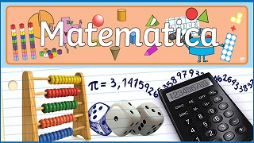

Aqui você encontra todos os materiais, links e exercícios sobre os temas que estamos estudando.
3º Bimestre
Nesta seção, você pode adicionar tópicos, links para vídeos ou arquivos PDF.
4º Bimestre
Aqui você pode listar os temas do segundo bimestre.